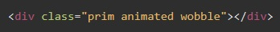
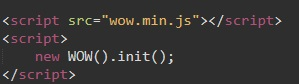
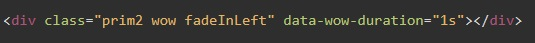

Как это работает? Сначала нам надо зайти на сайт разработчика и скачать библиотеку CSS
Далее эту библиотеку подключаем как обычную библиотеку CSS
Теперь для того что бы анимация применилась к элементу необходимо в атрибут "class" добавить слово "animated" и через пробел название анимации
Как смотреть название анимации? так же на главной странице разработчика в выпадающем списке мы можем посмотреть название анимации и как она себя ведет
Как можно управлять временем начала анимации. Если это не делать то анимация начнется сразу после загрузки страницы. А что если объект анимации находится в самом низу страницы, и пока пользователь доскролит до нашей анимации она уже пройдет. Вот для решения этой задачи и используется библиотека WOW js.
саму библиотеку можно скачать с гитхаб сайта разработчика
Далее необходимо из архива в папке disr вытащить файл wow.js и подключить ее как обычный script в своем документе.
Теперь необходимо инициализировать этот скрипт. Для этого просто содаем внизу нашего документа раздел script и внутрь него помещаем код:
new WOW().init();
Теперь вместо слова "animated" в класс элемента добавляем слово "wow" и через пробел название анимации
Атрибутом data-wow-duration="1s" - мы задаем скорость анимации в секундах.